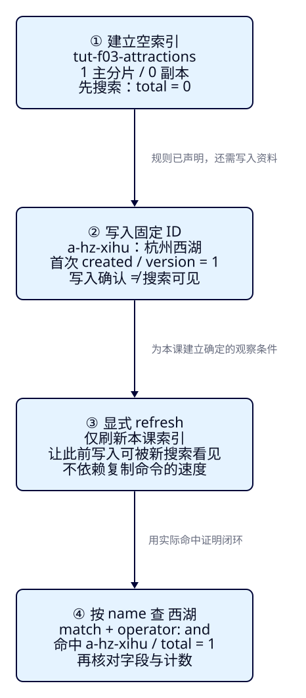
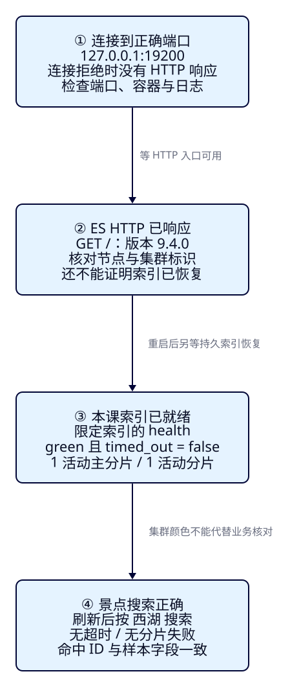

让 ES 在本机运行，
并查到第一条景点
F02 在纸上推演了数据到搜索结果。现在游客仍然输入“西湖”，我们让真实 Elasticsearch 返回“杭州西湖”：从空索引开始，写入一份景点资料，刷新后核对命中；再让节点停一次、请求错一次，学会判断究竟哪里失败。
本课目标
- 启动隔离的 ES 9.4.0 单节点，核对版本与节点数，区分端口可连接、HTTP 有响应与本课索引就绪。
- 显式创建索引、写入固定 ID，刷新后搜索，凭命中 ID、原始字段与计数证明闭环。
- 解释并恢复连接失败、重复创建和同 ID 覆盖，点名清理后重新得到首次写入结果。
本课实现的是“ES 收到搜索文档，并按条件取回结果”这一段。展示壳到 F07 才交付，现在用终端直接调用 REST API，Pages 负责阅读与复制。无需 Java、应用 JDK、数据库、Kibana 或中文插件。
展开本课目录
1. f03-c01：把纸上的一份资料变成真实命中
暂时只取 F02 的 A：业务 ID 为 a-hz-xihu，名称“杭州西湖”，城市编码 HZ，门票 0 分。价格是教学样本，不代表真实景区报价；零是明确的数值，不是缺价。本课只保留四个字段，城市、预算和状态的组合筛选随后再做。
| 观察项 | 本课固定契约 |
|---|---|
| 游客输入 | 名称关键词：西湖；没有城市或预算筛选 |
| 实验数据 | 一份杭州西湖；固定 _id=a-hz-xihu |
| 实验资源 | tut-f03-attractions；1 主分片 / 0 副本 |
| 首搜结果 | 刷新后 total=1 / relation=eq，命中 ID 和四个字段一致 |
| 当前能力边界 | 证明可搜索；一条文档不能证明相关性排序、中文召回或完整网站已可用 |
与前两课的人工词项和手工分数不同，下面的响应来自本轮真实 ES 9.4.0。我们验证稳定的命中与字段，不把 took 或 _score 当成每台机器都应相同的答案。
2. 请求路径说明“你正在操作什么”
Elasticsearch 是这里运行的搜索引擎；一个运行实例称为节点，节点组成集群。本课只有一个节点，所以运行进程、集群与索引很容易混在一起：启动容器并不会自动创建“景点”，创建景点索引也不会自动导入“西湖”。先保留这几个层次，再看操作。

| 方法与路径 | 资源与含义 |
|---|---|
| PUT /tut-f03-attractions | 创建索引，声明配置与字段规则 |
| PUT /tut-f03-attractions/_doc/a-hz-xihu | 写入或完整覆盖这个 _id 的文档 |
| POST /tut-f03-attractions/_refresh | 让此前写入对新搜索可见 |
| POST /tut-f03-attractions/_search | 在指定索引中按请求体的条件搜索 |
REST 请求由方法、路径、请求体共同表达。两条 PUT 的方法相同，路径指向的资源不同，不能只按方法判断是在创建索引还是写入文档。以 _search 结尾的路径接收查询规则，它的 JSON 也不是景点资料。
3. 先让自己的单节点运行起来
准备 Docker Engine/Desktop、Compose v2+、Bash 和 curl 7.76+（支持 --fail-with-body）。Windows 可使用 WSL2；本轮实测环境为 macOS arm64 + Docker。官方 Docker 指南要求 Docker Desktop 至少分配 4GB 内存。本实验容器上限 1GB、Java 堆 512MB，只承担这条小样本。
完整工程在 projects/travel-search/。复用已有单节点配置，宿主端口 19200 映射容器 HTTP 9200，绑定本机环回，不发布 transport 9300；与源码篇的 9200/9201 分开。
name: es-framework-single
services:
es:
image: docker.elastic.co/elasticsearch/elasticsearch:9.4.0
environment:
cluster.name: travel-search-lab
node.name: travel-search-01
discovery.type: single-node
xpack.security.enabled: "false"
xpack.ml.enabled: "false"
ES_JAVA_OPTS: -Xms512m -Xmx512m
ports:
- "127.0.0.1:19200:9200"
mem_limit: 1g
volumes:
- es-data:/usr/share/elasticsearch/data
volumes:
es-data:discovery.type=single-node 指定单节点发现模式。xpack.security.enabled=false 是本课显式选择，所以使用 HTTP 且不带认证；官方默认安全启动流程不同。curl 无需 CORS，Pages 也不直接访问 ES。es-data 挂载数据目录，停止/重启会保留数据；ES 用镜像自带 JVM，与 F07 的应用 JDK 25 分开。
cd projects/travel-search
docker compose -f infra/single-node/compose.yaml up -d
bash infra/single-node/wait.sh
export ES_URL=http://127.0.0.1:19200后续手工命令都在工程根目录执行。$ES_URL 保存固定端点；每个课次脚本也会自动回到工程根目录并固定使用 19200。等待脚本做最多 90 次探测，每次连接上限 2 秒、失败后等 2 秒，只确认 HTTP 入口可用，不能替代索引就绪或业务验证。
curl --fail-with-body -sS "$ES_URL/?pretty"
curl --fail-with-body -sS \
"$ES_URL/_cat/nodes?format=json&h=name,ip,node.role,master"
curl --fail-with-body -sS "$ES_URL/_cluster/health?pretty"{
"name": "travel-search-01",
"cluster_name": "travel-search-lab",
"version": {
"number": "9.4.0"
},
"nodes": [
{
"name": "travel-search-01",
"ip": "172.19.0.2",
"node.role": "cdfhilmrstw",
"master": "*"
}
]
}GET / 核对 version.number=9.4.0、节点名与集群名；_cat/nodes 返回一个节点，master=* 表示当前主节点；_cluster/health 的 number_of_nodes=1 再核对节点数。角色缩写由环境配置决定，不用背成固定答案。整个集群的健康还可能包含系统索引，不能用它的分片总数替代本课索引。
连接不上：先检查哪一层？
先运行下面命令。拉取镜像失败、端口被占用、容器退出和节点仍在启动是不同问题；端口占用时先查占用来源，不为本课停止已有业务服务。若退出 137，结合 OOMKilled 和日志判断内存问题，不能只凭退出数字下结论。Linux 内核要求按实际日志与官方说明核对。
docker info
docker compose -f infra/single-node/compose.yaml ps -a
docker compose -f infra/single-node/compose.yaml logs --tail=100 es4. 声明规则，建立一个空的景点索引
F02 区分了资料与字段规则。现在把规则写进 index.json：名称用 text，显式选择 standard 分析器；业务 ID 与城市编码用 keyword；门票用 integer，单位由我们约定为人民币分。_fen 后缀不会让 ES 自动换算货币。
{
"settings": {
"number_of_shards": 1,
"number_of_replicas": 0
},
"mappings": {
"properties": {
"attraction_id": { "type": "keyword" },
"name": { "type": "text", "analyzer": "standard" },
"city_code": { "type": "keyword" },
"ticket_price_fen": { "type": "integer" }
}
}
}一个主分片承载这组数据，副本是分片的另一份在线副本。单节点不能把同一主分片的副本放回自己，本课显式设零副本，便于得到 green；这也意味着没有在线冗余。先了解这两个配置的作用即可，分片和集群运行在 F28 起系统学习。更多字段、动态映射和类型错误交给 F04。
curl --fail-with-body -sS -X PUT \
"$ES_URL/tut-f03-attractions?pretty" \
-H 'Content-Type: application/json' \
--data-binary @search/f03/index.json
curl --fail-with-body -sS \
"$ES_URL/_cluster/health/tut-f03-attractions?wait_for_status=green&timeout=30s&pretty"
# 索引已就绪但尚无景点：同一名称查询应 total=0。
curl --fail-with-body -sS -X POST "$ES_URL/tut-f03-attractions/_search?pretty" \
-H 'Content-Type: application/json' \
--data-binary @search/f03/search-xihu.json--data-binary @文件 将文件内容作为请求体发送，Content-Type 声明 JSON。--fail-with-body 遇到 HTTP 4xx/5xx 时保留错误正文并返回非零退出码。URL 用双引号包住，里面的 & 才不会被 shell 当成后台执行符。创建索引 API中，确认创建与等待分片是不同判断。
{
"create": {
"acknowledged": true,
"shards_acknowledged": true,
"index": "tut-f03-attractions"
},
"index_health": {
"status": "green",
"timed_out": false,
"active_primary_shards": 1,
"active_shards": 1
}
}acknowledged=true 表示创建操作被确认，shards_acknowledged=true 表示等待的分片启动条件达成。后续限定健康请求还应读到 green、timed_out=false，活动主分片与活动总分片都为 1。健康等待也可能以 HTTP 200 返回 timed_out=true，必须读正文。
最后一条搜索使用稍后相同的“西湖”查询。预测：索引是 green，可有景点命中吗？此时本轮实际 hits.total={value:0, relation:"eq"}、hits.hits=[]。这是成功执行的空结果；创建规则并不等于已导入资料。完整空搜索响应。
5. 把景点写到确定的 ID 下
下面是景点资料，不再是索引规则。JSON 的 attraction_id 是普通业务字段；URL 最后一段才指定 ES 元数据 _id。我们约定两者相同，ES 不会因为字段名像 ID 就替你同步。
{
"attraction_id": "a-hz-xihu",
"name": "杭州西湖",
"city_code": "HZ",
"ticket_price_fen": 0
}curl --fail-with-body -sS -X PUT \
"$ES_URL/tut-f03-attractions/_doc/a-hz-xihu?pretty" \
-H 'Content-Type: application/json' \
--data-binary @data/f03/xihu.json{
"_index": "tut-f03-attractions",
"_id": "a-hz-xihu",
"_version": 1,
"result": "created"
}result=created、_version=1 说明本索引里的这个 ID 是首次写入。还不能从这两个字段得出“新搜索已经看见它”。本课不测自动刷新延迟，也不要求你在写入后迅速抢跑查询；下一步显式刷新，把结果判断的前提固定下来。
6. 显式刷新，然后按名称搜索“西湖”
查询体告诉 ES：在 name 字段执行 match，输入文本为“西湖”。match 会分析查询文本，再匹配字段已索引的词项，不是 SQL 子串 LIKE。operator=and 要求分析后形成的查询项共同满足；它不保证短语相邻，也不是城市或预算过滤。官方 match 语义。
{
"size": 10,
"track_total_hits": true,
"query": {
"match": {
"name": {
"query": "西湖",
"operator": "and"
}
}
}
}size=10 限定最多返回十个命中，track_total_hits=true 要求准确统计本次查询的总匹配数，两者不是同一个限制。本课只有一条文档，实际返回一条。standard 能完成此样本，不代表已经有旅游中文词典、别名或同义词能力，也不能把 F02 的手工词项表当成这里的真实分词。
curl --fail-with-body -sS -X POST \
"$ES_URL/tut-f03-attractions/_refresh?pretty"
curl --fail-with-body -sS -X POST \
"$ES_URL/tut-f03-attractions/_search?pretty" \
-H 'Content-Type: application/json' \
--data-binary @search/f03/search-xihu.json_refresh使此前写入对新搜索可见；本课只刷新 tut-f03-attractions。这次显式调用消除了观察竞态，不把“等一秒”当作可见性保证。实际批量写入不应照搬成每条都强制刷新；refresh 也不等于磁盘提交或备份。
{
"took": 23,
"timed_out": false,
"_shards": {
"total": 1,
"successful": 1,
"skipped": 0,
"failed": 0
},
"hits": {
"total": {
"value": 1,
"relation": "eq"
},
"max_score": 0.5753642,
"hits": [
{
"_index": "tut-f03-attractions",
"_id": "a-hz-xihu",
"_score": 0.5753642,
"_source": {
"attraction_id": "a-hz-xihu",
"name": "杭州西湖",
"city_code": "HZ",
"ticket_price_fen": 0
}
}
]
}
}先看执行是否完整：timed_out=false 且 _shards.failed=0。再看 hits.total.value=1、relation=eq，最后看数组中 _id=a-hz-xihu 与 _source 的四个字段。_source 是写入的资料，不是词项表；_score 是本次查询的相关性分数，不是 F02 的手工 3 分，也不是门票价格。只有这一个结果，还无法评价排序好坏。
7. mapping、count、GET 分别核对什么？
curl --fail-with-body -sS "$ES_URL/tut-f03-attractions/_mapping?pretty"
curl --fail-with-body -sS "$ES_URL/tut-f03-attractions/_count?pretty"
curl --fail-with-body -sS "$ES_URL/tut-f03-attractions/_doc/a-hz-xihu?pretty"| 请求 | 应该观察到什么？ |
|---|---|
| GET /tut-f03-attractions/_mapping | 四个字段类型与 index.json 一致；name 的 analyzer=standard |
| GET /tut-f03-attractions/_count | 无超时/分片失败前提下，本课无过滤的计数为 1 |
| GET /tut-f03-attractions/_doc/a-hz-xihu | found=true；_source 与样本一致；首次 version=1 |
mapping 返回规则，count 返回搜索视图中的匹配文档数，GET 按确定 ID 取一份资料。GET 与 search 即使命中同一景点，也不能混为同一种读取；本课核对发生在刷新之后，不借此证明未刷新时也相同。受控的 GET/search 可见性与冲突对照留到 F12。两轮完整响应与断言保存了这些实测结果。
8. f03-c02：连不上与索引没恢复，是两件事
先保留 C01 的索引与文档。访问一个确认未监听的错误端口，再停止本工程 ES 访问正确端口。预测：两次能得到 ES 返回的 HTTP 404 吗？本轮两次都是 curl exit=7，在连接阶段失败，没有 HTTP 响应。若 19299 已有服务，先选择另一个未监听端口，并相应修改本课对照脚本。
curl -sS --connect-timeout 2 --max-time 5 http://127.0.0.1:19299/
echo "$?" # 紧接上一条 curl：本轮连接拒绝为 7
docker compose -f infra/single-node/compose.yaml stop es
curl -sS --connect-timeout 2 --max-time 5 "$ES_URL/"
echo "$?"
docker compose -f infra/single-node/compose.yaml start es
bash infra/single-node/wait.sh
curl --fail-with-body -sS --retry 30 --retry-all-errors --retry-delay 1 \
--max-time 35 \
"$ES_URL/_cluster/health/tut-f03-attractions?wait_for_status=green&timeout=30s&pretty"
bash labs/f03/04-search.sh停止只作用于本工程的 es 服务，持久数据卷保留。重新启动后，HTTP 入口可能先有响应，索引仍在恢复；限定健康请求允许短暂的 404 重试。读到最终 green / timed_out=false / 1 活动主分片 后再刷新与搜索，应仍返回同一景点。HTTP 200 不是业务数据恢复完成的证明。

也可执行 bash labs/f03/08-connection-errors.sh，脚本在异常退出时尝试恢复自己的 ES。网络超时可能是 exit 28；启用 fail 选项后，HTTP 错误通常是 exit 22。先区分有没有收到 HTTP，再看状态码和正文，不能把所有失败都叫“ES 没启动”。
9. f03-c03：重复建索引，和重复写文档有什么不同？
现在向已存在的索引再次发送创建请求。预测：同样的 JSON 会静默成功吗？
# 这里故意不加 --fail-with-body：保留预期 400 的正文供观察。
curl -sS -X PUT "$ES_URL/tut-f03-attractions?pretty" \
-H 'Content-Type: application/json' \
--data-binary @search/f03/index.json{
"error": {
"type": "resource_already_exists_exception",
"reason": "index [tut-f03-attractions/xU3YNs_ATxiIEsCWauYBxw] already exists"
},
"status": 400
}这里故意不用 fail 选项，好观察预期错误正文。HTTP 是 400，error.type=resource_already_exists_exception；reason 里的索引 UUID 会变化。curl 默认可能退出 0，不能仅凭 shell 退出码宣称 ES 请求成功。保留这个索引即可继续覆盖实验，无需为了消除错误马上删除。
重复发送带 /_doc/a-hz-xihu 的 PUT，目标资源变为这个 ID 的文档：
# 相同索引、相同 _id、相同完整文档；不会多出第二条景点。
bash labs/f03/03-write.sh
curl --fail-with-body -sS -X POST "$ES_URL/tut-f03-attractions/_refresh?pretty"
curl --fail-with-body -sS "$ES_URL/tut-f03-attractions/_count?pretty"
curl --fail-with-body -sS "$ES_URL/tut-f03-attractions/_doc/a-hz-xihu?pretty"{
"write": {
"_id": "a-hz-xihu",
"_version": 2,
"result": "updated"
},
"count_after_refresh": 1
}同一索引、同一 _id 被完整覆盖，result=updated、版本从 1 变为 2，刷新后计数仍为 1。JSON 完全相同也会执行这次索引写入；改用另一 ID 则会新增另一条文档。这个 PUT 是完整替换，省略的旧字段不会自动留下；局部更新与并发保护在 F12 讲解。
10. 点名清理，重新完成一轮
清理只删除 tut-f03-attractions 以及里面的景点，不删除数据卷、历史 F01 索引或源码篇资源。不使用通配符，也不要为了重做运行 down -v。
# 只删除本课索引和里面的景点。不使用通配符，不删除数据卷。
curl --fail-with-body -sS -X DELETE "$ES_URL/tut-f03-attractions?pretty"首次运行时可逐条按上文操作；也可让 C01 脚本依次执行主流程 12 条请求。扩展案例与清理另有 11 次请求尝试，其中 2 次故意连接失败；启动探测和恢复重试次数随环境变化，单独计算。以下每一轮结束都点名清理，第二轮会重新得到 created / version=1：
bash labs/f03/run.sh # C01：空索引 → 写入 → 刷新 → 命中
bash labs/f03/08-connection-errors.sh # C02：错误端口 / 停机 / 持久数据恢复
bash labs/f03/06-existing-index.sh # C03：预期 400
bash labs/f03/07-write-again.sh # C03：updated / version=2 / count=1
bash labs/f03/cleanup.sh # 删除本课索引
# 再执行以上五行，即为清理后的第二轮。
docker compose -f infra/single-node/compose.yaml stop esrun.sh 不暗中删除旧索引。若中途停止后直接重跑，创建步骤可能返回已存在；需要先点名清理再从 C01 开始。索引本来不存在时，cleanup 返回 HTTP 404，确认是本课资源不存在后即可重跑；连接失败时先恢复节点。停止/启动保留资料，而 DELETE 索引后再建会丢失旧文档并重新开始版本，两者不能混淆。
f03-c01/c02/c03 各执行首次与清理后重做两轮，空结果、首搜、错误类型、停机持久化、版本与计数均核对。索引最终已清理，专用容器已停止，卷保留。真实 ES 记录与阅读验收分开保存；历史 F01 证据原样保留。
能力检查：不看命令，怎样证明你已经学会？
先复述四步顺序，再从空资源手写方法、路径与请求体。提交一份无超时/分片失败的响应，指出命中 ID、准确总数与四个字段；解释“green 但 total=0”“curl exit 7”“HTTP 400 已存在”分别卡在哪一层。最后说明同 ID 再写后为何 updated、版本增长却只有一份文档，并能清理重做。只看到容器 Up 或一条绿色提示还不够。
练习：先判断，再展开答案
1. 空索引已经 green，为什么搜“西湖”返回 total=0？
green 说明本课分片已分配，不说明景点已写入。创建声明了规则，尚无文档；查询成功执行也可以返回空结果。写入固定样本并刷新后才能核对 total=1。
2. 一次写入返回 created，能否断言搜索已看见？
不能。它确认写入，不确认新搜索视图已包含这次写入。本课显式 refresh 后搜索；“等一秒”不是固定可见性上限，也不靠操作速度复现未刷新状态。
3. JSON 的 attraction_id 相同，但 URL 用两个不同 ID，会怎样？
在本索引里会是两份文档。attraction_id 是普通字段，URL 的 _id 决定写入目标。本课同索引同 _id 重复 PUT 才是完整覆盖，刷新后计数保持 1。
4. curl 退出 0，但正文 status=400，应该算创建成功吗？
不算。curl 未启用 fail 选项时可成功收到了错误 HTTP 响应，却退出 0。看 HTTP 状态和 error.type；本课的 resource_already_exists_exception 表示索引已存在，可继续文档覆盖对照。
5. 重启后 GET / 返回 200，接下来能直接宣布数据恢复吗？
还需等待本课索引健康、检查 timed_out=false，再刷新搜索并核对 ID 和字段。HTTP 恢复、分片就绪与业务结果正确分别验证。数据卷保留是恢复的前提，本课没有删除卷。
本课陷阱
速记与下一课
| 动作 | 证据与条件 |
|---|---|
| 启动 | 19200 / ES 9.4.0 / 单节点；重启另等指定索引 |
| 建立空索引 | 显式 settings/mappings；1 主 / 0 副本；green 但搜索为 0 |
| 写入与刷新 | 固定 _id；created / version=1；refresh 后新搜索可见 |
| 核对首搜 | 无超时/分片失败；total=1 / eq；a-hz-xihu 与 _source 一致 |
| 覆盖与重做 | 同 ID updated / version=2 / count=1；点名删除后重新 created |
先声明规则，再写资料；明确搜索可见性，然后用实际命中证明闭环。
现在只能验证一条景点的名称首搜。多份资料中的城市、状态、金额、坐标该怎样声明？F04 将解释支撑后续查询的最小字段设计，并把固定语料批量导入、读懂条级失败；关键词语义与组合过滤随后在 F05/F06 展开。